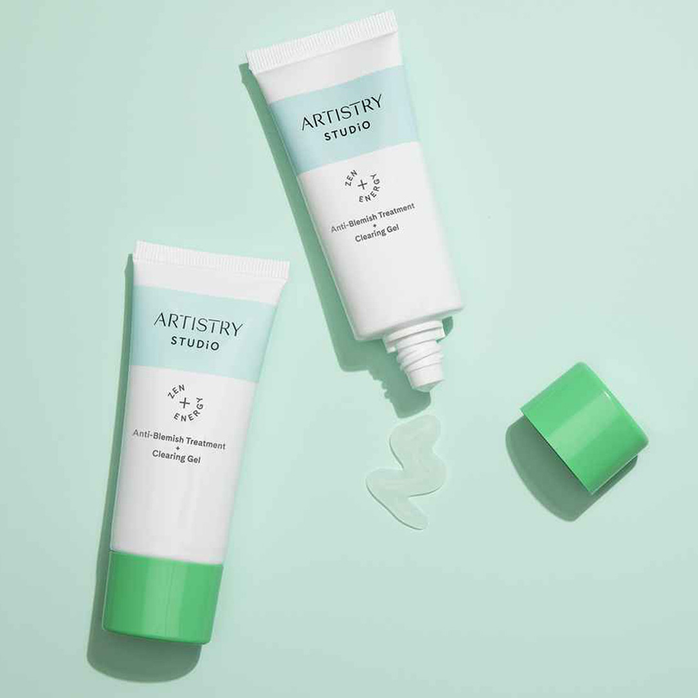

Limpiador facial
Limpieza facial
Ayuda a retirar las impurezas acumuladas en la piel.
$250.00
Ver detalles
Ingredientes: Formulado con ácido salicílico para tratar imperfecciones y brotes, combinado con extractos de manzanilla y té verde que calman la piel.
Modo de uso: Aplica una pequeña cantidad sobre el rostro limpio o focalizado directamente sobre los brotes activos.
Producto: Artistry Studio Zen + Energy Anti-Blemish Treatment Clearing Gel